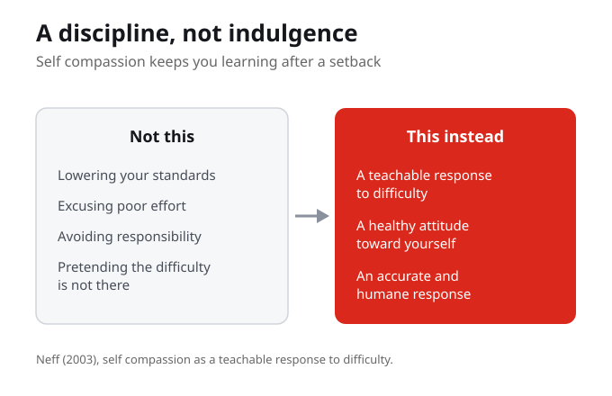
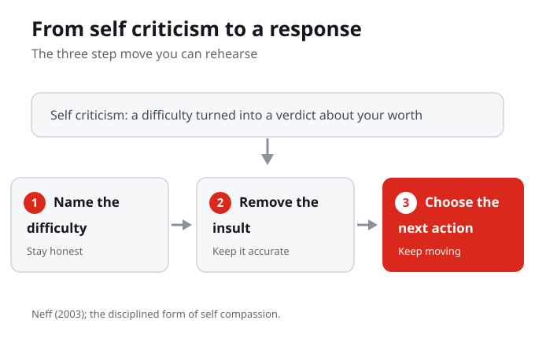

1. In this week's frame, self compassion is best described as:
2. The central question for the week is:
3. Self compassion in this week is distinguished from:
4. The three step response practised this week is:
5. Neff (2003) treats self compassion as:
6. Stephenson (2018) connects self compassion to:
7. Rewriting harsh self talk this week means:
The purpose of this week is to connect psychological theory to practical learning, well being, and resilience. The work stays grounded in course sources and uses everyday academic examples so the concepts can travel beyond class.
By the end of this week you should be able to

The second half of the course begins with self compassion as a disciplined learning practice, not indulgence. This is not about lowering standards or making excuses. It is about replacing harsh self talk with a more accurate and humane response so that a student can keep learning after a setback. The goal is to make the psychology useful without turning the week into a personal disclosure task.
Self compassion is a disciplined learning practice, not indulgence. It replaces self criticism with a more accurate and humane response, which is what makes it possible to keep learning after a setback.
When you struggle with a task, what does your self talk usually sound like, and is it accurate?
A common worry is that self compassion is a way to excuse poor effort. This week separates self compassion from excuse making. Removing the insult from your self talk is not the same as removing the responsibility. You still name the difficulty honestly and you still choose the next action. What changes is that the difficulty is described accurately instead of being turned into a verdict about your worth.
Self compassion is distinguished from avoiding responsibility. You still name the difficulty and still choose a next action; what changes is that the difficulty is described accurately rather than turned into an insult.
How could you be honest about a mistake without turning it into an insult about who you are?

The week uses Neff and Stephenson to connect self compassion, self esteem, and irrational beliefs. Neff treats self compassion as a teachable response to difficulty, a healthy attitude toward oneself. Stephenson connects self compassion to self esteem and to irrational beliefs. The practical move is to rewrite harsh self talk into accurate self support: name the difficulty, remove the insult, and choose the next action.
Neff treats self compassion as a teachable response to difficulty, and Stephenson connects it to self esteem and irrational beliefs. The practical move is to rewrite harsh self talk into accurate self support.
Take one harsh sentence you say to yourself. What is the accurate version that still names the difficulty?
Self acceptance sits next to self compassion. Self acceptance does not mean approving of every outcome or pretending a weak result was strong. It means holding an accurate view of yourself, including the difficulty, without converting that view into self attack. When self criticism becomes the whole story, it can stop a student from acting. An accurate and humane response keeps the next action in reach.
Self acceptance means holding an accurate view of yourself, including the difficulty, without converting it into self attack. When self criticism becomes the whole story, it can stop a student from acting.
Where does harsh self criticism stop you from taking the next step rather than helping you take it?
The practice this week is small and repeatable. When a difficulty shows up, run a three step response: name the difficulty, remove the insult, choose the next action. Naming keeps you honest. Removing the insult keeps the description accurate. Choosing the next action keeps you moving. This is the disciplined form of self compassion, and it is something you can rehearse on ordinary academic tasks.
The disciplined form of self compassion is a three step response: name the difficulty, remove the insult, choose the next action. Naming keeps you honest, removing the insult keeps it accurate, and choosing the next action keeps you moving.
For a task you are avoiding right now, what are your three steps: the difficulty, the insult to remove, and the next action?
The second half of the course begins with self compassion as a disciplined learning practice, not indulgence. It replaces harsh self talk with a more accurate and humane response, which is what makes it possible to keep learning after a setback.
Self compassion is distinguished from excuse making. You still name the difficulty honestly and you still choose the next action. What changes is that the difficulty is described accurately rather than turned into a verdict about your worth.
Neff treats self compassion as a teachable response to difficulty and a healthy attitude toward oneself. Stephenson connects self compassion to self esteem and to irrational beliefs, which is why rewriting harsh self talk into accurate self support is the central move.
When a difficulty shows up, run a small repeatable response: name the difficulty, remove the insult, choose the next action. This is the disciplined form of self compassion, and it can be rehearsed on ordinary academic tasks.
The first half of the course named stress, adversity, and recovery as linked but distinct, and treated resilience as a supported process rather than a personal trait. Those weeks described the pressures students face and the recovery that follows.
Self compassion and self acceptance turn that work inward: drawing on Neff, the week treats self compassion as a disciplined response to difficulty, distinct from excuse making, and practises rewriting self criticism into an accurate and humane next action.
Once self talk can be made accurate rather than harsh, the question turns to psychological flexibility: how to keep moving without confusing persistence with pushing past every limit, and when to keep a strategy or change it.
What would you say to another student in your situation, and why do you deserve the same accuracy? Carry this question through the week and use it to notice where self criticism becomes the whole story rather than an accurate description of a difficulty.
Your notes save automatically on this device and stay after you close your browser or shut down. Use Save my notes (below) to download a copy you can keep or open on another device.
Why is self compassion described this week as a discipline rather than indulgence?
How is self compassion distinguished from avoiding responsibility?
What do Neff and Stephenson contribute to this week's frame?
What is the three step response practised this week?
1What is the central argument or claim? Put it in one sentence.
2What evidence does the author use to support it?
3Which key concept or term carries the most weight, and how is it defined?
4What does the argument assume, and whose perspective might be missing?
5How does this reading connect to this week's topic and the other sources?
6Where do you agree, and where would you push back, and why?
7What is one question you still have after reading?
Read Neff (2003) for self compassion as a teachable response to difficulty and a healthy attitude toward oneself. Mark one sentence that helps explain the week's central question about replacing self criticism with an accurate and humane response.
Read Stephenson (2018) for how self compassion connects to self esteem and to irrational beliefs. Note where accurate self support differs from simply trying to feel better about yourself.
Pick one ordinary academic task you are avoiding and run the three step response: name the difficulty, remove the insult, choose the next action. Keep it descriptive, not confessional.
Neff, K. D. (2003). Self-compassion: An alternative conceptualization of a healthy attitude toward oneself. Self and Identity, 2(2). (Self compassion as a teachable response to difficulty.)
Stephenson, E., Watson, P. J., Chen, Z. J., and Morris, R. J. (2018). Self-compassion, self-esteem, and irrational beliefs. Current Psychology. (Self compassion, self esteem, and irrational beliefs.)